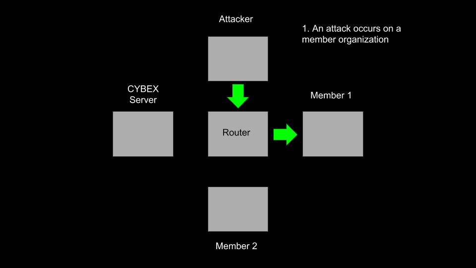

The Project
Project Description
CYBEX is a cybersecurity automation system meant to increase the speed and accuracy of responding to cybersecurity incidents in real time. CYBEX is designed to import and analyze log files from the Snort IDS in real time in order to identify potential attacks or breaches. If a compromise is found, CYBEX will generate an IPTables firewall rule that to block the attack and pushes it out to all relevant devices connected to the CYBEX system.
Throughout this process, the privacy of organizations is preserved. CYBEX sanitizes log files to remove any sensitive or identifying information. When a new rule or solution is sent out to members, no identifying information is provided about what triggered the event. No actual logs are saved on the CYBEX system and members of CYBEX do now know any other members of the system.
Development and testing of CYBEX was done in a sandbox environment simulating a small network. There was one attacking device, 2 member organizations, and the central CYBEX server in the environment.
